Ano de Criação: 1977 e as primeiras NRs foram publicadas em 8 de junho de 1978
Entidade: Ministério do trabalho e emprego
Quantas NR's existem? 38, sendo que a NR-2 (Inspeção Prévia) e NR-27 (Registro Profissional do Técnico de Segurança do Trabalho) foram revogadas.
Revisão: A elaboração e a revisão das normas regulamentadoras são realizadas adotando o sistema tripartite paritário, preconizado pela Organização Internacional do Trabalho (OIT), por meio de grupos e comissões compostas por representantes do governo, de empregadores e de trabalhadores.
NR-1 — Disposições Gerais e Gerenciamento de Riscos Ocupacionais (GRO)
A NR-1 é a norma “base” das NRs: ela define disposições gerais, campo de aplicação, termos e definições comuns às demais normas e, principalmente, estabelece o Gerenciamento de Riscos Ocupacionais (GRO). Um ponto central é o item 1.5, que define requisitos mínimos para o Programa de Gerenciamento de Riscos (PGR). No mesmo contexto, a NR-1 reforça a obrigatoriedade de Análise de Acidentes de Trabalho (AAT) e do Plano de Resposta a Emergências (PRE), formando o conjunto prático do GRO (PGR + AAT + PRE).
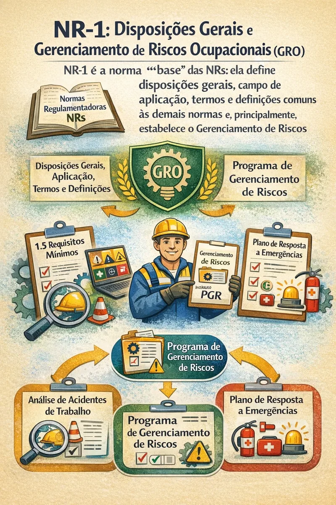
NR-3 — Embargo e Interdição
A NR-3 trata das medidas urgentes de embargo e interdição, aplicadas quando existe grave e iminente risco ao trabalhador. Ela utiliza duas tabelas para classificar o “excesso de risco”: uma para exposição individual/baixo potencial de vítimas e outra para exposição com possibilidade de atingir várias vítimas simultaneamente. O excesso de risco pode ser classificado como E (Extremo), S (Substancial), M (Moderado), P (Pequeno) ou N (Nenhum). A norma também define critérios que orientam o Auditor Fiscal do Trabalho (AFT), que deve aplicar embargo/interdição na menor unidade onde o risco foi identificado.
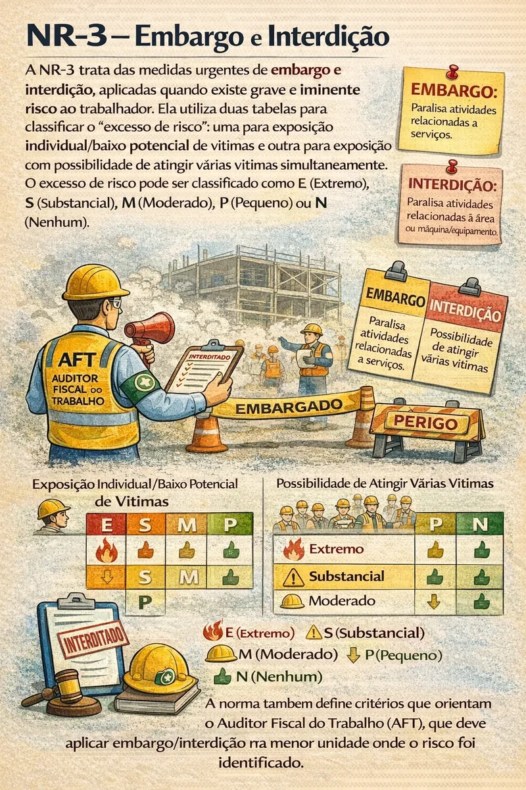
NR-4 — SESMT (Serviços Especializados em Segurança e Medicina do Trabalho)
A NR-4 define regras e critérios para dimensionamento do SESMT, que é a estrutura técnica responsável por apoiar a empresa em segurança e saúde do trabalho. O dimensionamento depende do grau de risco do estabelecimento e da quantidade de trabalhadores, podendo impactar diretamente a necessidade de profissionais da área. A norma destaca as principais categorias do SESMT: Técnico de Segurança, Engenheiro de Segurança, Médico do Trabalho, Enfermeiro do Trabalho e Auxiliar de Enfermagem do Trabalho, além das atribuições e responsabilidades desses profissionais.

NR-5 — CIPA (Comissão Interna de Prevenção de Acidentes)
A NR-5 regulamenta a CIPA, comissão formada por trabalhadores que atua na prevenção de acidentes e doenças relacionadas ao trabalho, fortalecendo a cultura de segurança dentro da empresa. Ela define regras de dimensionamento, processo eleitoral, composição, atribuições e funcionamento. O texto também menciona a Lei nº 14.457/2022, que trouxe medidas de prevenção e combate ao assédio sexual e outras formas de violência no âmbito da CIPA, ampliando seu papel na proteção do trabalhador.
NR-6 — Equipamento de Proteção Individual (EPI)
A NR-6 estabelece que as empresas devem fornecer, gratuitamente, EPIs adequados ao risco, em perfeito estado de conservação e funcionamento. O EPI deve ser utilizado quando as medidas gerais ou coletivas não forem suficientes para eliminar o risco, enquanto medidas coletivas estiverem sendo implantadas ou em situações de emergência. Em outras palavras, a NR-6 organiza a responsabilidade do empregador sobre fornecimento, orientação e uso correto dos EPIs, garantindo proteção individual quando o risco não puder ser totalmente controlado por outras medidas.
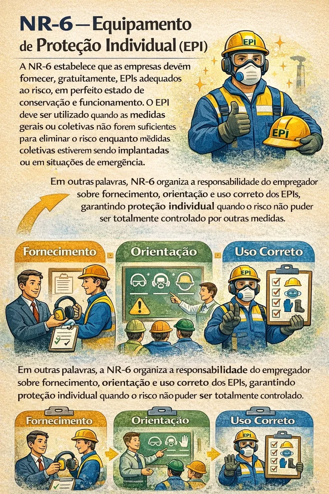
NR-7 — PCMSO (Programa de Controle Médico de Saúde Ocupacional)
A NR-7 define diretrizes para o PCMSO, que tem foco em prevenir e identificar precocemente danos à saúde causados pelo trabalho. Entre as diretrizes principais estão: rastrear agravos relacionados ao trabalho, detectar exposições excessivas a agentes nocivos e apoiar a definição de aptidão do empregado para funções específicas. A norma se aplica a organizações e também a órgãos públicos com trabalhadores regidos pela CLT. Na prática, a NR-7 organiza a “linha de cuidado” médico-ocupacional: acompanhamento, rastreio e ações preventivas.

NR-8 — Edificações
A NR-8 estabelece requisitos técnicos mínimos para segurança e conforto em edificações utilizadas como ambiente de trabalho. Ela exige que empresas adequem suas estruturas físicas (instalações, condições arquitetônicas e elementos que afetam segurança) conforme parâmetros mínimos da norma. É uma NR que ajuda a evitar riscos estruturais e condições inadequadas, contribuindo diretamente para um ambiente de trabalho mais seguro e funcional.
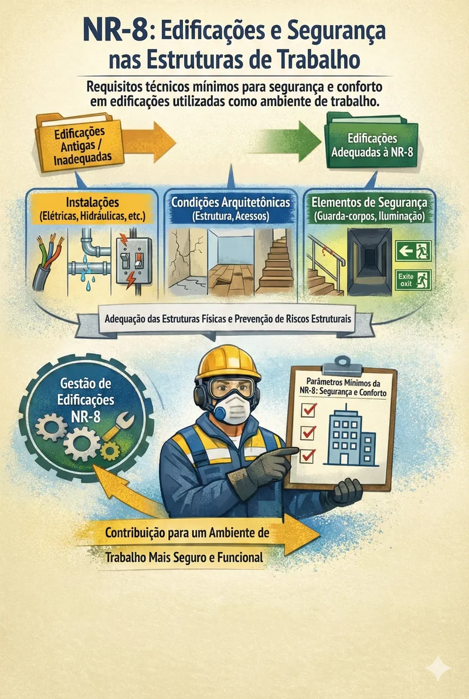
NR-9 — Avaliação e Controle das Exposições Ocupacionais (agentes físicos, químicos e biológicos)
A NR-9 passou por atualização: antes era associada ao PPRA, e agora foca na avaliação e controle de exposições ocupacionais a agentes físicos, químicos e biológicos. Ela se conecta ao PGR da NR-1, pois os agentes devem ser avaliados quando identificados no gerenciamento de riscos. Na prática, a NR-9 sustenta tecnicamente a identificação, avaliação e controle desses agentes e direciona medidas preventivas, reforçando a transição do antigo PPRA para uma lógica integrada ao PGR e à gestão.

NR-10 — Segurança em Instalações e Serviços em Eletricidade
A NR-10 define requisitos mínimos para garantir segurança e saúde em atividades com eletricidade, protegendo trabalhadores que interajam direta ou indiretamente com instalações elétricas. A norma orienta medidas de controle e sistemas preventivos para reduzir risco de choque, arco elétrico, queimaduras e outros eventos relacionados. Ela é essencial em ambientes com manutenção elétrica, infraestrutura predial, indústria e qualquer atividade com exposição elétrica.
NR-11 — Transporte, Movimentação, Armazenagem e Manuseio de Materiais
A NR-11 reúne orientações e exigências de segurança para operações envolvendo elevadores, guindastes, transportadores industriais e máquinas transportadoras. Ela se aplica a empresas que movimentam e armazenam cargas, organizando obrigações e cuidados para evitar acidentes como quedas de carga, esmagamentos, colisões e falhas operacionais. É uma norma prática para logística, armazéns, hospitais (movimentação interna) e indústria.
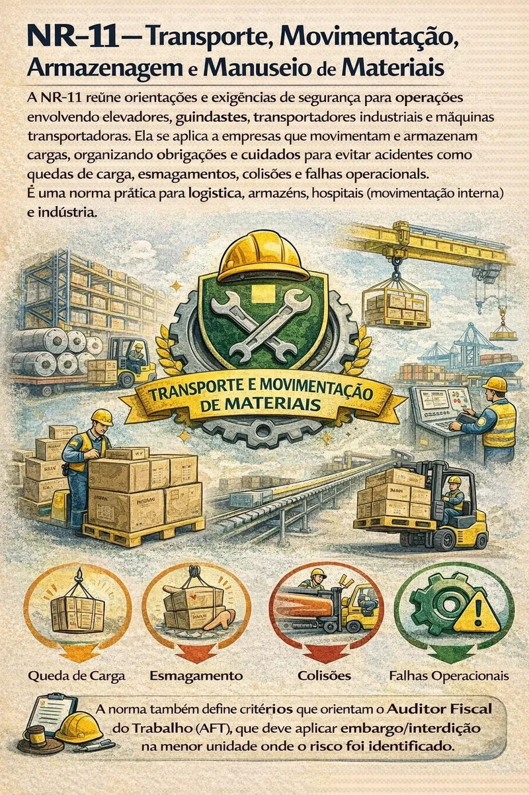
NR-12 — Segurança no Trabalho em Máquinas e Equipamentos
A NR-12 estabelece requisitos mínimos para prevenir acidentes e doenças do trabalho relacionados a máquinas e equipamentos, desde o projeto e fabricação até instalação, operação, manutenção e comercialização. Ela é crucial para reduzir riscos como partes móveis expostas, falhas de proteção, acionamento indevido e ausência de dispositivos de segurança. Também abre espaço para atuação de SST em treinamentos de operadores e adequações técnicas, pois exige proteção e gestão segura do uso de máquinas.

NR-13 — Caldeiras, Vasos de Pressão, Tubulações e Tanques Metálicos
A NR-13 define regras para gestão da integridade estrutural e segurança de caldeiras, vasos de pressão, tubulações e tanques metálicos, abrangendo instalação, inspeção, operação e manutenção. O foco é reduzir riscos de falhas catastróficas, explosões e vazamentos, protegendo trabalhadores e patrimônio. Ela é bastante técnica e exige controle rigoroso de inspeções e condições operacionais.

NR-14 — Fornos
A NR-14 trata de segurança na operação de fornos, considerando construção, revestimento, calor e instalação. Seu objetivo é garantir que o equipamento seja operado com segurança, prevenindo acidentes e riscos por altas temperaturas e condições operacionais perigosas. A norma se aplica a atividades industriais e processos que utilizam fornos, reforçando medidas de prevenção voltadas ao risco térmico e à segurança do equipamento.

NR-15 — Atividades e Operações Insalubres
A NR-15 define condições de insalubridade, quando o trabalhador é exposto a agentes acima dos limites de tolerância (por intensidade, concentração, natureza ou tempo). O objetivo é alertar e orientar sobre situações que podem causar danos à saúde e que demandam controle, medidas de prevenção e, quando aplicável, enquadramento legal (como adicional). É uma norma essencial para avaliar exposições e estabelecer limites e critérios técnicos.
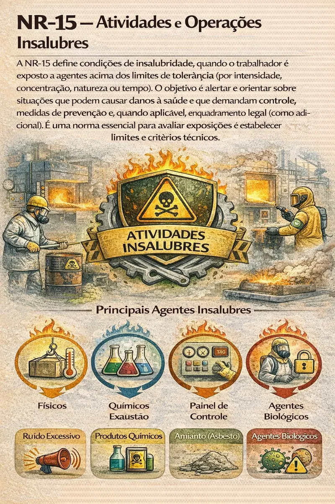
NR-16 — Atividades e Operações Perigosas
A NR-16 aborda atividades perigosas e define medidas de segurança para trabalhos com risco acentuado (por exemplo, algumas atividades com inflamáveis, explosivos e outras condições perigosas). Ela também ressalta que a caracterização ou descaracterização da periculosidade é responsabilidade do empregador mediante laudo técnico elaborado por Médico do Trabalho ou Engenheiro de Segurança. É uma NR ligada à prevenção e também a efeitos legais/trabalhistas quando a atividade é enquadrada como perigosa.
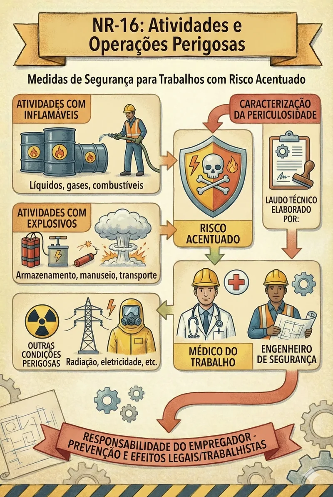
NR-17 — Ergonomia
A NR-17 define diretrizes para adaptar o trabalho às características psicofisiológicas do trabalhador, promovendo conforto, segurança, saúde e eficiência. Ela envolve parâmetros para trabalho sentado, levantamento e transporte de materiais, mobiliário, equipamentos e condições ambientais do posto. Na prática, ajuda a reduzir dores musculoesqueléticas, fadiga e queda de produtividade, sendo muito aplicada em escritórios, áreas administrativas, saúde e indústria.

NR-18 — Segurança e Saúde no Trabalho na Indústria da Construção
A NR-18 é uma das mais relevantes para construção civil, pois estabelece diretrizes administrativas, de planejamento e organização para implementação de medidas de controle e sistemas preventivos nos processos, condições e ambiente de trabalho da construção. Ela organiza obrigações e práticas para reduzir acidentes em canteiros, atividades em altura, escavações, movimentação de materiais e outros riscos típicos da construção.
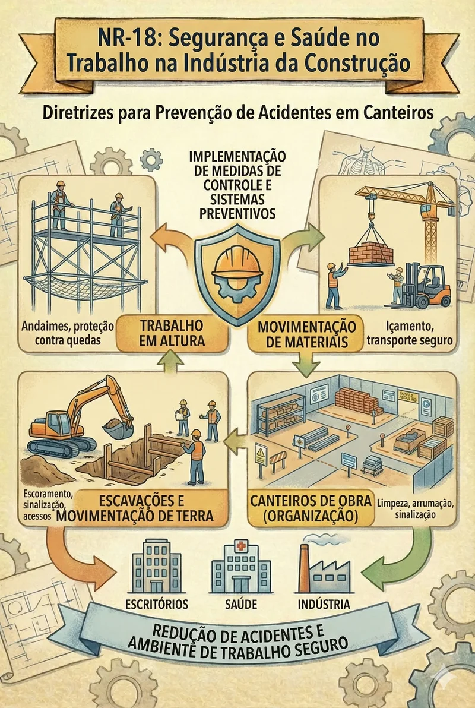
NR-19 — Explosivos
A NR-19 define requisitos e medidas de prevenção para segurança e saúde em todas as etapas envolvendo explosivos: fabricação, manuseio, armazenamento e transporte. Ela também conceitua explosivo como material que sofre decomposição rápida quando iniciado, com liberação intensa de calor e pressão. É uma NR crítica para setores industriais específicos e exige alto controle de riscos devido ao potencial de acidentes graves.

NR-20 — Inflamáveis e Combustíveis
A NR-20 estabelece requisitos mínimos para gestão de segurança e saúde em atividades com inflamáveis e combustíveis, incluindo extração, produção, armazenamento, transferência, manuseio e manipulação. Ela aborda conceitos como ponto de fulgor, ponto de combustão e ponto de ignição, importantes para classificar e controlar o risco. A norma é essencial para prevenir incêndios, explosões e vazamentos e exige medidas preventivas robustas.

NR-21 — Trabalhos a Céu Aberto
A NR-21 trata do trabalho realizado a céu aberto e estabelece exigências de proteção, como abrigo contra intempéries, além de normas para trabalho em áreas pantanosas/alagadiças visando evitar riscos de doenças e endemias. É uma NR importante para atividades rurais, obras externas e serviços em vias públicas, pois considera exposição ao clima e ambientes insalubres naturais.
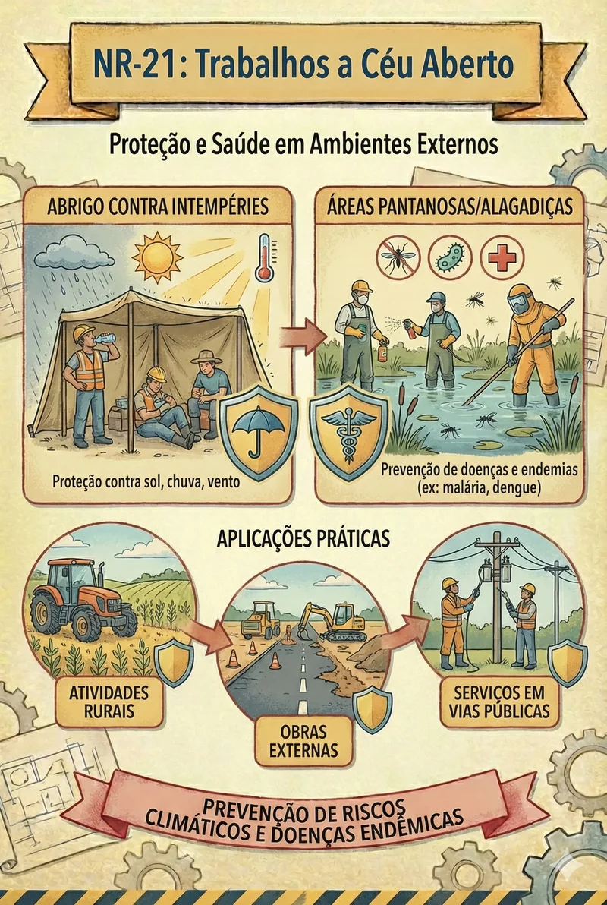
NR-22 — Segurança e Saúde Ocupacional na Mineração
A NR-22 é voltada para mineração subterrânea, a céu aberto, garimpos, beneficiamento e pesquisa mineral. Ela define cuidados técnicos e organizacionais para que o planejamento e a execução da atividade mineral ocorram com foco permanente em segurança e saúde. Trata de riscos característicos como desmoronamentos, poeiras, explosivos, máquinas pesadas e condições ambientais extremas.

NR-23 — Proteção Contra Incêndios
A NR-23 define medidas de prevenção contra incêndios nos ambientes de trabalho, que devem ser adotadas conforme legislação estadual e normas técnicas aplicáveis. Mesmo sendo uma norma curta, ela reúne exigências essenciais: orientações de segurança que todos os trabalhadores devem conhecer e mecanismos obrigatórios de prevenção e resposta. Serve como base para organização de rotas de fuga, sinalização e preparação para emergências.
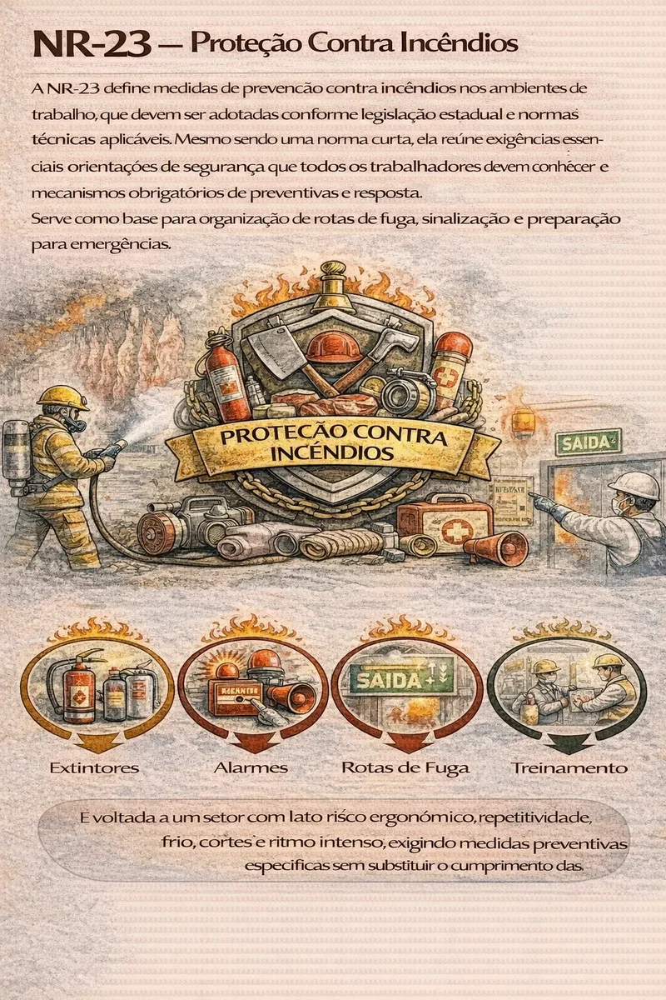
NR-24 — Condições Sanitárias e de Conforto nos Locais de Trabalho
A NR-24 define padrões mínimos de higiene e conforto, como banheiros, lavatórios e dimensionamento conforme o turno com maior número de trabalhadores. A norma busca garantir condições dignas e adequadas para o trabalhador, evitando riscos sanitários, desconforto e problemas de saúde decorrentes de estrutura insuficiente ou inadequada.

NR-25 — Resíduos Industriais
A NR-25 estabelece requisitos de segurança e saúde no gerenciamento de resíduos industriais (sólidos, líquidos e gasosos) que não se assemelham aos resíduos domésticos. Ela inclui exemplos como cinzas, lodos, óleos, poeiras, borras, substâncias lixiviadas e resíduos gerados por equipamentos de controle de poluição, efluentes e emissões atmosféricas. Na prática, orienta como lidar com resíduos para reduzir riscos químicos/biológicos e impactos à saúde e ao meio ambiente.

NR-26 — Sinalização de Segurança
A NR-26 define regras para sinalização de segurança em itens perigosos, incluindo uso de cores, classificação, rotulagem preventiva e ficha com dados de segurança. O objetivo é garantir comunicação clara de riscos, reduzindo acidentes por desconhecimento, erro de manuseio ou falta de informação sobre substâncias e áreas perigosas.

NR-28 — Fiscalização e Penalidades
A NR-28 estabelece os procedimentos de fiscalização e as penalidades aplicáveis quando há descumprimento das normas de segurança e saúde do trabalho. Ela funciona como norma “disciplinadora”, definindo como ocorre a atuação fiscalizatória e quais consequências legais podem ocorrer, reforçando a importância do cumprimento efetivo das NRs.

NR-29 — Segurança e Saúde no Trabalho Portuário
A NR-29 estabelece medidas de prevenção e diretrizes para gerenciamento de riscos ocupacionais no trabalho portuário. Busca proteger contra acidentes e doenças, facilitar primeiros socorros e garantir melhores condições de segurança e saúde a trabalhadores portuários, tanto em operações a bordo quanto em terra. Aplica-se também a trabalhadores em portos organizados e instalações portuárias de uso privativo e retroportuárias.

NR-30 — Segurança e Saúde no Trabalho Aquaviário
A NR-30 disciplina requisitos para proteção da segurança e saúde no trabalho aquaviário e prevenção de lesões e agravos. Aplica-se a trabalhos em embarcações comerciais de bandeira nacional e estrangeira (quando aplicável por convenções internacionais), inclusive embarcações usadas para prestação de serviços. É essencial para organizar procedimentos, condições de trabalho e prevenção de riscos típicos do ambiente aquaviário.
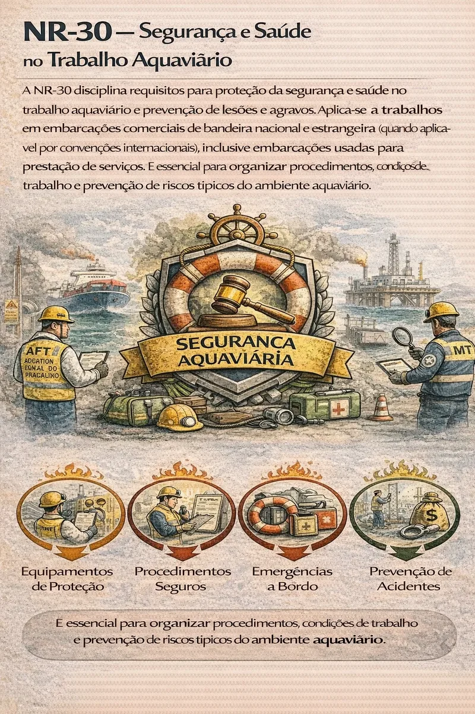
NR-31 — Segurança e Saúde no Trabalho Rural
A NR-31 se aplica às atividades de agricultura, pecuária, silvicultura, exploração florestal e aquicultura, considerando diferentes formas de relação de trabalho e o local das atividades. Também se aplica à exploração industrial dentro de estabelecimentos rurais. É uma NR que cobre riscos como máquinas rurais, agrotóxicos, calor, esforço físico e condições ambientais, estruturando medidas preventivas no meio rural.

NR-32 — Segurança e Saúde no Trabalho em Serviços de Saúde
A NR-32 define diretrizes para proteger trabalhadores de serviços de saúde e também aqueles que atuam em promoção e assistência à saúde em geral. Considera serviços de saúde qualquer edificação destinada ao atendimento da população e ações de promoção, recuperação, assistência, pesquisa e ensino em qualquer nível de complexidade. Na prática, ela é fundamental para controlar riscos biológicos, químicos, perfurocortantes, resíduos de saúde e rotinas que expõem trabalhadores a agravos.
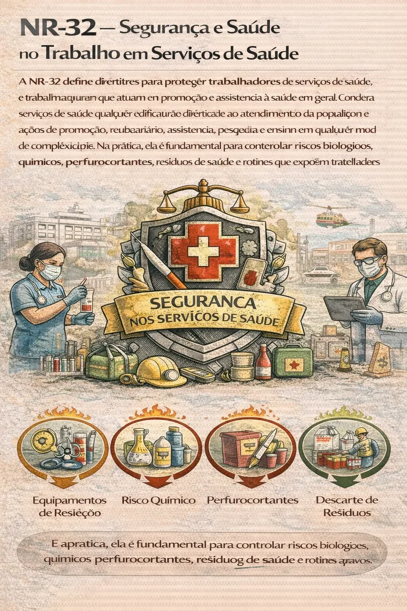
NR-33 — Segurança e Saúde em Espaços Confinados
A NR-33 define requisitos para caracterização de espaços confinados, gerenciamento de riscos e medidas de prevenção para proteger trabalhadores que interagem direta ou indiretamente nesses ambientes. Espaço confinado é aquele que não foi projetado para ocupação humana contínua, possui entrada/saída limitadas e pode ter atmosfera perigosa. A NR-33 é crítica porque esses ambientes podem envolver risco de asfixia, intoxicação, explosão e morte, exigindo controles rigorosos.
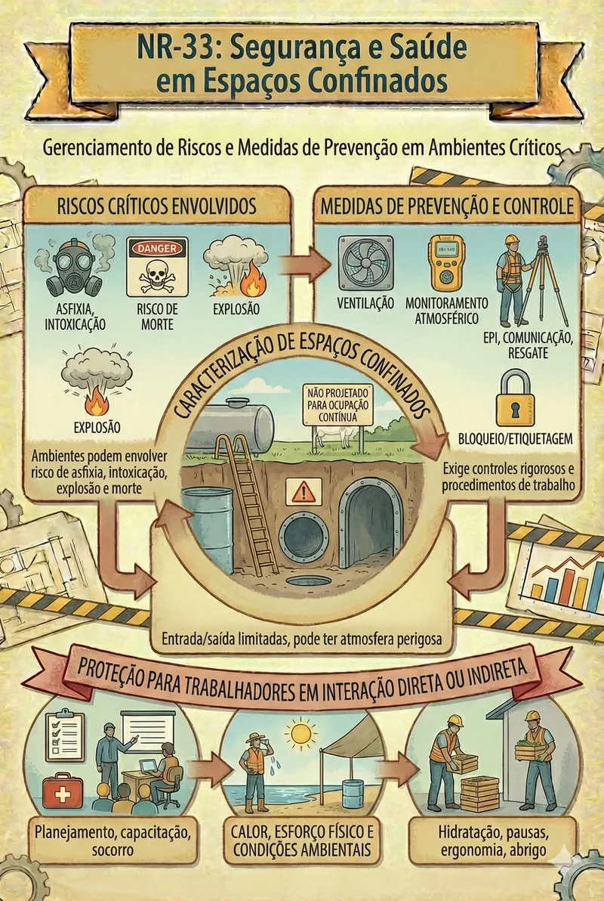
NR-34 — Indústria da Construção, Reparação e Desmonte Naval
A NR-34 estabelece requisitos mínimos e medidas de proteção para segurança, saúde e meio ambiente de trabalho na indústria naval (construção, reparação e desmonte). Aplica-se tanto às instalações quanto às embarcações e estruturas (navios, barcos, lanchas, plataformas fixas/flutuantes). Ela lida com riscos típicos como soldagem, espaços confinados, trabalho em altura, movimentação de cargas e exposição a agentes químicos.
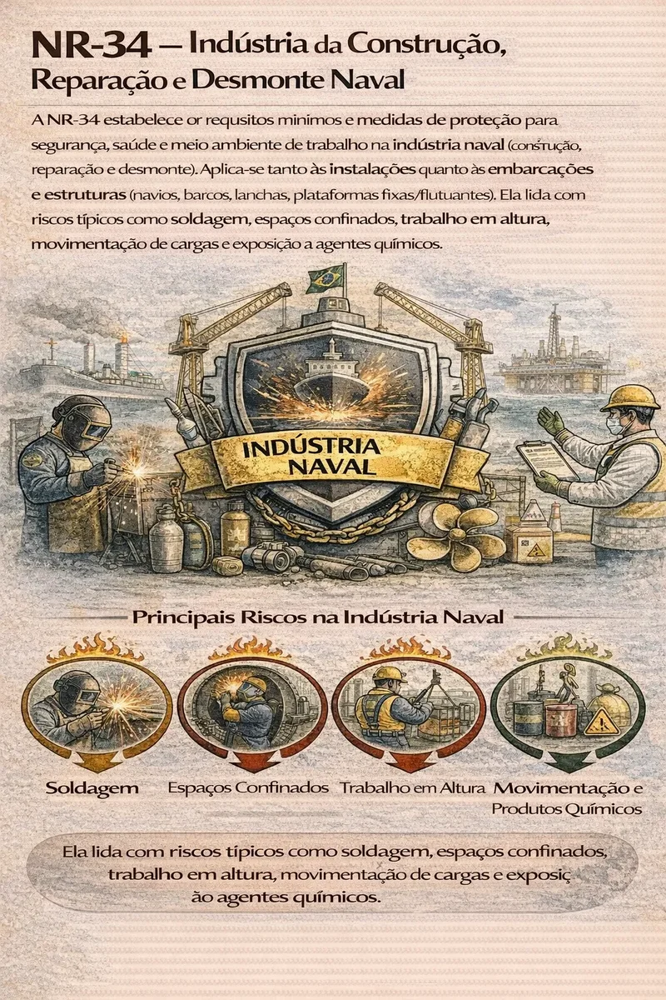
NR-35 — Trabalho em Altura
A NR-35 define requisitos e medidas de prevenção para trabalho em altura, incluindo planejamento, organização e execução, garantindo segurança e saúde dos envolvidos. Aplica-se a atividades com diferença de nível acima de 2 metros, quando há risco de queda. Na prática, exige controle rigoroso do processo, pois quedas são uma das principais causas de acidentes graves no trabalho.
NR-36 — Abate e Processamento de Carnes e Derivados
A NR-36 estabelece requisitos mínimos para avaliação, controle e monitoramento de riscos na indústria de abate e processamento de carnes e derivados, garantindo segurança, saúde e qualidade de vida no trabalho. É voltada a um setor com alto risco ergonômico, repetitividade, frio, cortes e ritmo intenso, exigindo medidas preventivas específicas sem substituir o cumprimento das demais NRs.
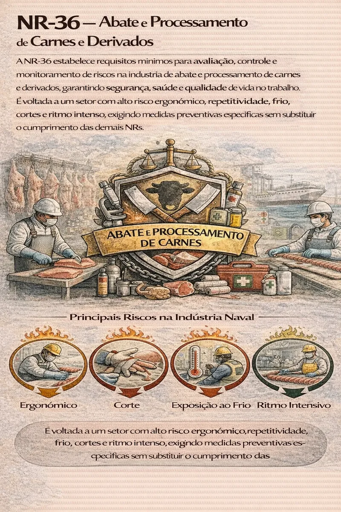
NR-37 — Segurança e Saúde em Plataformas de Petróleo
A NR-37 estabelece requisitos de segurança, saúde e condições de vivência no trabalho a bordo de plataformas de petróleo nas Águas Jurisdicionais Brasileiras. Aplica-se a plataformas nacionais e estrangeiras e às Unidades de Manutenção e Segurança autorizadas. Ela é essencial porque o ambiente offshore envolve riscos elevados (incêndio, explosão, confinamento, evacuação, condições climáticas e isolamento).

NR-38 — Limpeza Urbana e Manejo de Resíduos Sólidos
A NR-38 define requisitos e medidas de prevenção para garantir condições de segurança e saúde no trabalho em atividades de limpeza urbana e manejo de resíduos sólidos. Ela é voltada a um setor com exposição frequente a riscos biológicos, perfurocortantes, trânsito, máquinas, esforços físicos e condições ambientais, organizando medidas para reduzir acidentes e adoecimentos.
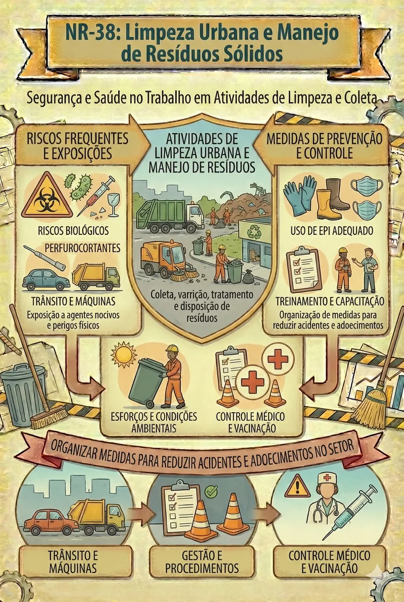